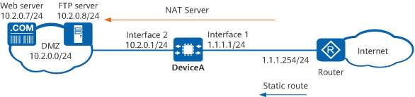

Example for Configuring NAT Server for Internet Users to Access Intranet Servers
Networking Requirements
An enterprise has deployed DeviceA at the intranet border. NAT Server needs to be configured on DeviceA so that the web and FTP servers on the enterprise's private network can provide services to Internet users. Due to limited IP address resources, the enterprise has only one available public IP address 1.1.1.1. This IP address is assigned to the WAN interface of DeviceA and used by the intranet server to provide services to Internet users. Figure 1 shows the network diagram, in which the router is the access gateway provided by the ISP.

In this example, interfaces 1 and 2 represent 10GE 0/0/1 and 10GE 0/0/2, respectively.

Item |
Data |
Description |
|
|---|---|---|---|
10GE0/0/1 |
IP address: 1.1.1.1/24 |
1.1.1.1/24 is a public address provided by the ISP. |
|
10GE0/0/2 |
IP address: 10.2.0.1/24 |
Intranet servers use 10.2.0.1 as the default gateway address. |
|
NAT Server |
Name: policy_web Public IP address: 1.1.1.1 Private IP address: 10.2.0.7 Public port: 8080 Private port: 80 |
When Internet users send traffic to 1.1.1.1 through port 8080, DeviceA can forward the traffic to the web server based on this mapping entry. The web server has the private address 10.2.0.7 and private port number 80. |
|
Name: policy_ftp Public IP address: 1.1.1.1 Private IP address: 10.2.0.8 Public port: 21 Private port: 21 |
When Internet users send traffic to 1.1.1.1 through port 21, DeviceA can forward the traffic to the FTP server based on this mapping entry. The FTP server has the private address 10.2.0.8 and private port number 21. |
||
Default route |
Destination address: 0.0.0.0 Next-hop address: 1.1.1.254 |
Configure a default route to the Internet on DeviceA so that it can forward traffic from intranet servers to the ISP router. |
|
Configuration Roadmap
- Configure IP addresses for interfaces, enabling network connectivity. In addition, enable the NAT function on 10GE 0/0/1.
- Configure NAT Server to implement address translation for the intranet web and FTP server.
- Configure a default route on DeviceA to enable it to forward traffic from intranet servers to the ISP router.
- Configure a static route to the public address of intranet servers on the ISP router.
Procedure
- Configure IP addresses for interfaces, enabling network connectivity. In addition, enable the NAT function on 10GE 0/0/1.
# Configure an IP address for 10GE 0/0/1 and enable the NAT function on this interface.
<HUAWEI> system-view [HUAWEI] sysname DeviceA [DeviceA] interface 10ge 0/0/1 [DeviceA-10GE0/0/1] undo portswitch [DeviceA-10GE0/0/1] ip address 1.1.1.1 24 [DeviceA-10GE0/0/1] nat enable [DeviceA-10GE0/0/1] quit
# Configure an IP address for 10GE 0/0/2.
[DeviceA] interface 10ge 0/0/2 [DeviceA-10GE0/0/2] undo portswitch [DeviceA-10GE0/0/2] ip address 10.2.0.1 24 [DeviceA-10GE0/0/2] quit
- Configure NAT Server.
[DeviceA] nat server policy_web protocol tcp global 1.1.1.1 8080 inside 10.2.0.7 www route [DeviceA] nat server policy_ftp protocol tcp global 1.1.1.1 ftp inside 10.2.0.8 ftp route
- Enable the NAT ALG function for FTP.
[DeviceA] firewall detect ftp - Configure a default route on DeviceA to enable it to forward traffic from intranet servers to the ISP router.
[DeviceA] ip route-static 0.0.0.0 0.0.0.0 1.1.1.254 - On the ISP router, configure a static route to the public address of intranet servers, with the next-hop address set to 1.1.1.1. The ISP router can then forward traffic destined for the intranet server to DeviceA.
Contact the ISP network administrator to perform this step.
Verifying the Configuration
- Verify that Internet users can access the intranet servers.
- Check for the session entries with the destination address as the public address of intranet servers. If such an entry is found and the post-NAT IP address is the private IP address of an intranet server, the NAT policy has been configured successfully.
<HUAWEI> display session all verbose Session Table Information: Protocol : 6(TCP) SrcAddr Port Vpn : 1.2.1.3 2474 DestAddr Port Vpn : 1.1.1.1 8080 Time To Live : 60s NAT Info New SrcAddr : - New SrcPort : - New DestAddr : 10.2.0.7 New DestPort : 80 Total : 1
Configuration Scripts
# sysname DeviceA # nat server policy_web protocol tcp global 1.1.1.1 8080 inside 10.2.0.7 www route nat server policy_ftp protocol tcp global 1.1.1.1 ftp inside 10.2.0.8 ftp route # interface 10GE0/0/1 ip address 1.1.1.1 255.255.255.0 nat enable # interface 10GE0/0/2 ip address 10.2.0.1 255.255.255.0 # firewall detect ftp # ip route-static 0.0.0.0 0.0.0.0 1.1.1.254 # return